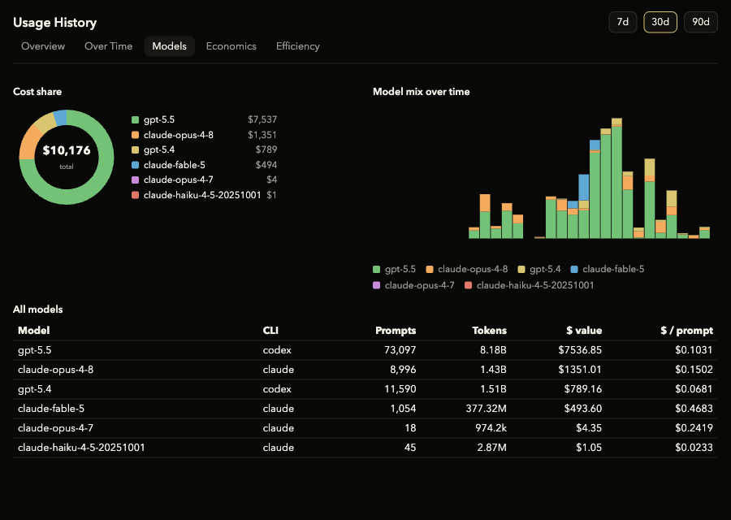

2
providers — Claude & Codex, side by side
Usage Meter sits in your menu bar and reads out how many tokens — and how much money — your Claude Code and Codex sessions are spending. Live limits up top, a full history dashboard underneath. It never leaves your Mac.
Open the full window from the menu bar. Five focused views turn raw token logs into tokens-over-time, real-dollar cost, per-model breakdowns, and how much caching is saving you.

Models view — cost share, model mix over time, and per-model cost-per-prompt.
Your 5-hour and weekly limits for both providers, top-right on every desktop — it follows you across Spaces instead of living on one.
Every token valued at pay-as-you-go API rates, so you see cost per day, per model, and per prompt — not just opaque percentages.
A daily bar chart, a cumulative-spend curve, and a GitHub-style cost calendar show exactly when your spend spikes.
Cache hit rate per model and an estimate of what those cached reads would have cost at full price.
This build isn't notarized by Apple yet, so macOS will say it "can't be opened." That's expected — clearing the download flag once is all it takes.
Open the DMG and drag Usage Meter into your Applications folder.
Run the one-time command below in Terminal so macOS will open it.
Open Usage Meter. A small meter appears in your menu bar — that's it.
Requires macOS on Apple Silicon (M1 or later). Prefer not to use Terminal? Right-click the app in Applications → Open → Open.
Usage Meter reads the transcript logs the Claude and Codex CLIs already write to your disk, tallies the tokens, and prices them locally. No account, no telemetry, no server.
It's MIT licensed — read the code, audit exactly what it touches, fork it, or open a pull request.
github.com/Samarth2709/UsageMeter